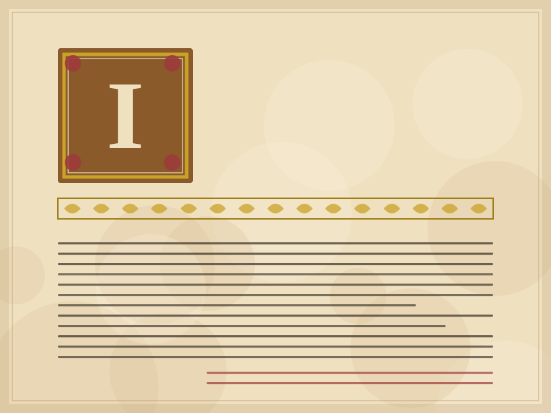
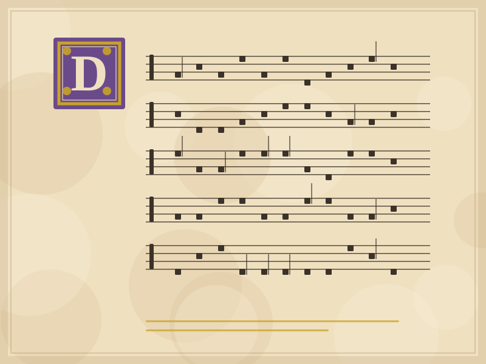
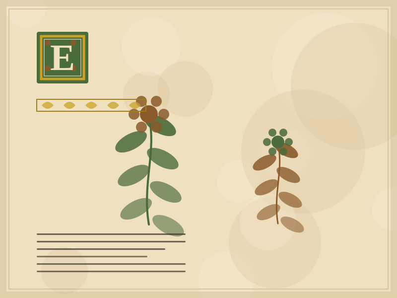

ms. 001 · 12th century
Catalogue
Six items datable between the 11th and the 15th century. Each catalogue entry records the descriptive metadata, the material data and the state of digitisation.
ms. 001 · 12th century

ms. 002 · 14th century

ms. 003 · 15th century

ms. 004 · 11th century

ms. 005 · 15th century

ms. 006 · 15th century
No manuscript matches the given criteria.
Try removing one of the filters or searching for a more general term.